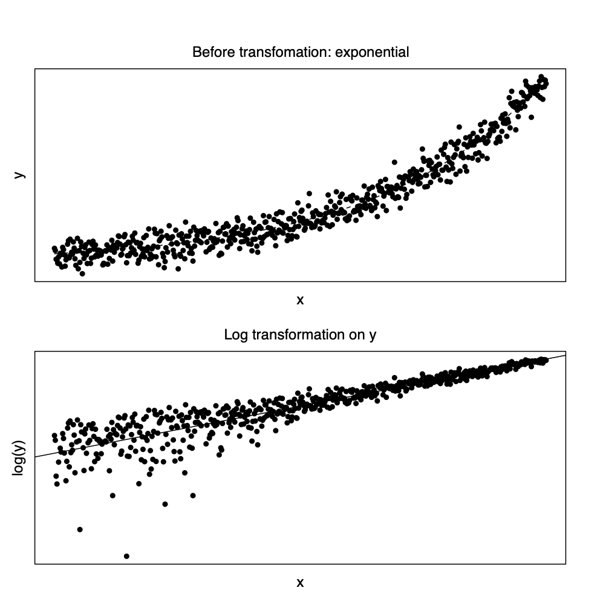

4 모형의 진단
4.1 등분산성 가정의 위반
일반적인 회귀분석모형에서 \[ \pmb y = \pmb X \pmb \beta + \pmb e \]
오차항이 다음과 같이 서로 독립이고 등분산성을 만족한다면 \[ var(\pmb e) =\sigma^2 \pmb I_n \]
최소제곱법에 의한 회귀계수 추정량 \(\hat {\pmb \beta}\) 다음과 같고
\[ \hat {\pmb \beta} = (\pmb X^t\pmb X)^{-1}\pmb X^t\pmb y \]
이는 최소분산선형추정량(BLUE)이다. 만약에 오차항에 대한 가정이 만족하지 않는다면 최소제곱법 추정량 \(\hat {\pmb \beta}\)의 최적성이 유지되는가에 대한 질문이 생기게 된다.
여기서 오차항의 분산에 대하여 좀더 일반적인 모형을 생각해보자. 가장 일반적인 모형은 다음과 같은 임의의 양정치행렬(positive definite matrix) \(\pmb V\)가 오차항의 공분산 행렬인 경우이다.
\[ Var(\pmb e) = \pmb V \] 가장 일반적인 경우를 고려하기 전에 전형적인 가정을 약간 벗어나면서 실제 문제에서 흔히 접하는 경우를 생각해 보자.
일단 오차항이 서로 독립이지만 분산이 다른 경우이다.
\[ Var(\pmb e) = \text{diag} [\sigma_1^2,\sigma_2^2,\dots, \sigma_n^2 ] \]
4.1.1 가중 최소제곱법
이러한 경우에 가중 최소제곱법(Weighted Leadt Square Estimator; WLSE)을 사용하면 최소제곱법 추정량의 최적성을 유지할 수 있다.
오차항의 분산 \(\sigma_1^2,\sigma_2^2,\dots, \sigma_n^2\)을 안다고 가정하면 각 관측값 \(y_i\)를 해당 오차의 표분편차 \(\sigma_i\)로 나누면 등분산성을 다시 얻을 수 있다.
\[ Var (y_i) = Var (\pmb x_i^t \pmb \beta + e_i)=Var ( e_i)=\sigma_i^2 \]
\[ \Rightarrow Var (y_i/\sigma_i) = Var (\pmb x_i^t \pmb \beta' + e_i/ \sigma_i)=Var ( e_i/\sigma_i) = 1 \]
이 떄 새로운 관측치 \(y'_i = y_i/\sigma_i\)를 사용하여 최소제곱법을 적용하면
\[ \min_{\pmb \beta'} \sum_{i=1}^n (y'_i - \pmb x_i^t \pmb \beta')^2 = \min_{\pmb \beta} \sum_{i=1}^n \left [\frac{1}{\sigma_i^2} \right ](y_i - \pmb x_i^t \pmb \beta)^2 \equiv \min_{\pmb \beta} \sum_{i=1}^n w_i (y_i - \pmb x_i^t \pmb \beta)^2\]
여기서 \(w_i=1/\sigma^2_i\)이다. 이러한 가중최소제곱법은 각 관측치에 대하여 서로 다른 가중치를 적용하여 최소제곱 추정량을 구하며 위의 경우에는 가중치가 반응값의 분산에 반비례한다. 따라서 분산이 큰 오차항을 가진 반응값의 가중치는 분산이 작은 반응값에 비해 상대적으로 작다. 이러한 가중치와 분산의 관계는 변이가 적은 반응값 근방에서 오차를 더욱 줄이려고 하는 직관적인 생각과 일치한다. 가중치를 적용한 최소제곱 추정량은 다음과 같이 나타낼 수 있다.
\[ \hat {\pmb \beta}= (\pmb X^t \pmb W \pmb X)^{-1}\pmb X^t \pmb W \pmb y \] 여기서
\[ \pmb W = \text{diag} \left [\frac{1}{\sigma_1^2},\frac{1}{\sigma_2^2},\dots, \frac{1}{\sigma_n^2} \right ] = [Var(\pmb e)]^{-1} =\pmb V^{-1} \]
위에서 본 가중최소제곱법을 오차항이 일반적인 공분산 행렬 \(\pmb V\)를 가질 때 적용하면 다음과 같이 목적 함수를 나타낼 수 있으며
\[ \min_{\pmb \beta} (\pmb y - \pmb X \pmb \beta)^t \pmb V^{-1} (\pmb y - \pmb X \pmb \beta) \]
가중최소제곱추정량은 다음과 같이 나타낼 수 있다.
\[ \hat {\pmb \beta}_* = (\pmb X^t \pmb V^{-1} \pmb X)^{-1} \pmb X^t \pmb V^{-1} \pmb y \tag{4.1}\]
가중최소제곱추정량은 다음과 같은 성질은 만족한다.
가중최소제곱추정량은 불편추정량이다: \(E(\hat {\pmb \beta}_*) =\pmb \beta\)
가중최소제곱추정량 \(\hat {\pmb \beta}_*\)는 분산이 가장 작은 불편선형 추정량이다 (Gauss-Markov Theorem)
가중최소제곱추정량 \(\hat {\pmb \beta}_*\)의 분산:
\[ Var(\hat {\pmb \beta}_*) = (\pmb X^t \pmb V^{-1} \pmb X)^{-1} \]
가중최소제곱추정량 \(\hat {\pmb \beta}_*\)은 \(\pmb y\)가 평균이 \(\pmb X \pmb \beta\)이고 분산이 \(V\)인 정규분포에서 \(\pmb \beta\)에 대한 최대우도추정량이다.
일반최소제곱추정량도 불편추정량이다: \(E(\hat {\pmb \beta}) =\pmb \beta\)
가중최소제곱법에서 유의할 점은 오차항의 공분산 행렬 \(\pmb V\)에 대하여 모르는 경우 이를 추정해야 하며 가중최소제곱추정량에 공분산 행렬의 추정치
\(\hat {\pmb V}\)을 사용할 경우 위에서 언급한 최적성은 더 이상 성립하지 않는다.
\[ \hat {\pmb \beta}_* = (\pmb X^t \hat {\pmb V}^{-1} \pmb X)^{-1}\pmb X^t \hat {\pmb V}^{-1} \pmb y \]
더 나아가 공분산행렬 \(\pmb V\)에 대한 추정은 어려운 문제이므로 그 추정 방법과 통계적 성질을 잘 고려하여 사용해야 한다. 정확한 추정을 위해서 또는 자료의 특성을 이용하여 공분산 행렬 \(\pmb V\)에 대한 모형을 어느 정ㅇ도 단순화하는 것이 바람직하다. 예를 들어 공분산 행렬 \(\pmb V\)를 다음과 같이 나타낼 수 있다면 유용할 것이다.
\[ \pmb V = \sigma^2 \text{diag} [v_1, v_2,\dots, v_n ] \] 여기서 \((v_1,v_2,\dots,v_n)\)은 알려진 값이고 \(\sigma^2\)는 추정해야하는 모수이다.
오차항의 등분산성에 대한 가정을 검토하기 위한 방법중 가장 유용하고 간단한 방법은 잔차그림을 이용하는 것이다. 잔차 \(r_i\)와 적합된 값 \(\hat y_i\)에 대한 잔차그림을 그려서 잔차의 퍼진 정도가 적합된 값 \(\hat y_i\)에 따라 변하면 등분산성에 대한 가정을 의심해봐야 한다. 실제 자료에서 반응값의 분산이 독립변수에 비례하여 나타나는 경우가 많다. 단순회귀모형을 고려하고
\[ y_i= \beta_0 + \beta_1 x_i + e_i \] 오차항이 서로 독립이며 그 분산이 독립변수에 비례한다고 가정하자.
\[ Var (e_i) = x_i \sigma^2 \] 이러한 경우는 독립변수의 값이 양인 경우이며 독립변수의 값이 커지면 반응값의 분산도 커진다. 이러한 경우 독립변수와 종속변수의 관계, 회귀식, 잔차그림은 다음과 같이 나타난다.
4.2 변수변환
변수변환(Variable transformation)은 독립변수와 종속변수를 변환함으로서 회귀식의 적합도를 향상시켜 예측력을 높일 수 있을뿐 아니라 최소제곱법에서의 등분산성 가정에 대한 만족도를 높일 수 있는 유용한 방법이다 (variance stabilization). 이 절에서는 변수변환의 종류와 그 효과를 단순회귀식에서 살펴본다. 중회귀의 경우에는 변수변환의 적용을 복합적으로 고려해야 할 것이다.
4.2.1 지수모형과 멱함수: 로그변환
회귀식에 대한 모형이 지수함수 모형인 경우, 즉 독립변수와 종속변수가 다음과 같은 경우 \[ y = \beta_0 \exp (\beta_1 x) \] 종속변수에 대한 로그 변환(log transformation)을 하면 선형관계에 매우 가깝게 된다 ( 아래 그림 참조). \[ \log(y_i) = \beta,_0 + \beta_1 x_i + e_i \] 여기서 주의할 점은 원래의 지수모형에 오차항의 지수함수가 곱해지는 형태가 되어야 로그 변환후에 등분산성의 가정을 만족하게 된다. 즉 오차항 \(e_i\)를 서로 독립이고 평균이 0, 분산이 \(\sigma^2\)이라고 하면 다음과 같은 관계가 성립된다. \[ y_i = \beta_0 \exp (\beta_1 x_i)\exp(e_i) \quad \Rightarrow \quad \log(y_i) = \beta'_0 + \beta_1 x_i + e_i \]
회귀식에 대한 모형이 멱함수모형인 경우, 즉 독립변수와 종속변수가 다음과 같은 경우 \[ y = \beta_0 x^\beta_1 \] 독립변수와 종속변수에 대한 로그 변환을 하면 선형관계에 매우 가깝게 된다. \[ \log(y_i) = \beta,_0 + \beta_1 \log(x_i) + e_i \] 여기서 주의할 점도 원래의 멱함수모형에 오차항이 곱해지는 형태가 되어야 로그 변환후에 등분산성의 가정을 만족하게 된다. 즉 오차항 \(e_i\)를 서로 독립이고 평균이 0, 분산이 \(\sigma^2\)이라고 하면 다음과 같은 관계가 성립된다. \[ y_i = \beta_0 x^\beta_1 \exp(e_i) \quad \Rightarrow \quad \log(y_i) = \beta'_0 + \beta_1 \log(x_i) + e_i \]
회귀식에 대한 모형이 역지수함수 모형인 경우, 즉 독립변수와 종속변수가 다음과 같은 경우 \[ y = \beta_0 \exp (\beta_1/ x) \] 종속변수에 대한 로그 변환과 독림변수에 대한 역변환을 하면 선형관계에 매우 가깝게 된다. \[ \log(y_i) = \beta,_0 + \beta_1 \left ( \frac{1}{x_i} \right ) + e_i \] 여기서 주의할 점은 원래의 역지수모형에 오차항의 지수함수가 곱해지는 형태가 되어야 로그 변환후에 등분산성의 가정을 만족하게 된다.
4.2.2 쌍곡선과 역변환
생물학, 경제학등의 문야에서 독립변수와 종속변수의 관계가 쌍곡선(Hyperbola) 형태인 경우가 많다. 독립변수가 증가함에 따라 종속변수의 값이 수렴하는 경우에 이러한 관계가 매우 유용하다. \[ y = \frac{x}{\beta_0 + \beta_1 x} \] 이러한 경우에 독립변수와 종속변수에 모두 역변환(Inverse transformation)을 취하면 선형관계에 매우 가깝게 된다 (아래 그림 참조). \[ \frac{1}{y_i} = \beta_0 + \beta_1 \left ( \frac{1}{x_i} \right ) + e_i \]
위에서 살펴본 회귀모형들에서 변수변환후에 등분산성에 대한 가정을 만족하려면 대부분 변환전의 함수관계식에 오차항의 지수함수가 곱해지는 형태가 되어야 한다 (multiplicative error model). 이렇게 오차항이 함수관계식에 곱해지는 형태가 아니 다른 형태라면, 예를 들어 오차항이 원래의 함수관계식에 더해지는 형태 (additive error model), 등분산성의 가정이 상당히 위배될 수 있음을 주의해야 한다. 예를 들어 회귀식에 대한 모형이 지수함수 모형인 경우 서로 독립이고 평균이 0, 분산이 \(\sigma^2\)인 오차항 \(e_i\)를 함수 관계식에 더해졌다면 로그변환된 종속 변수와 독립변수는 선형관계를 보이지만 등분산성 가정은 만족하지 못하게된다.
\[ y_i = \beta_0 \exp (\beta_1 x_i) +e_i \quad \Rightarrow \quad \log(y_i) \cong \beta'_0 + \beta_1 x_i + e^*_i \]

4.2.3 Box-Cox 변환
앞 절에서 보았듯이 종속변수에 로그변환 등을 적용하면 여러 가지 유용한 점이 많다. 위에서 살펴본 종속변수에 변환은 여러 가지 비선형모형을 선형모형에 가깝게 만들어 주며 Multiplicative error model과 같이 반응값이 분산이 독립변수의 크기에 영향을 받는 모형을 등분산성을 가진 형태의 모형으로 버꾸어 준다 (Variance stabilization). 이렇게 종속변수에 대한 여러 가지 변환을 하나의 체계적인 형태로 결합한것을 Box-Cox 변환으로 부르며 다음과 같아 정의한다.
\[ y^{(\lambda)} = \begin{cases} \log(y) & \text{ if } \lambda=0 \\ \frac{y^\lambda -1}{\lambda} & \text{ if } \lambda \ne 0 \end{cases} \tag{4.2}\]
Box-Cox 변환은 로그변환과 멱변환을 모두 포함하고 있다. 또한 Box-Cox 변환된 \(y^{(\lambda)}\)가 정규분포를 따른다는 가정 하에 자료가 주어졌을때 \(\lambda\)에 대한 최대우도추정량을 구할 수 있다.
4.3 다중공선성
회귀분석에서 독립변수들간의 강한 선형 관계의 경향이 있을 때 이를 다중공선성(multicollinearity)라고 한다. 즉, \(p\)개의 독립변수 \(x_1,x_2,\dots,x_p\)의 관계가 다음과 같은 선형관계에 가깝다면 다중공선성이 존재한다고 한다.
\[ c_1 x_1 + c_2 x_2 + \dots + c_p x_p \cong 0 \]
다중공선성에 의해 발생하는 여러 가지 문제점들을 기술적으로 독립변수들의 강한 선형관계때문에 행렬 \(X^tX\)가 ill-conditioned 행렬이 되어 그 역행렬이 불안정하게 구해지는 결과 때문에 생기게 된다. 여기서 회귀계수의 공분산 행렬은 다음과 같이 주어짐에 유의하자.
\[ Var(\pmb b) = \sigma^2 (X^t X)^{-1} \]
예를 들어서 두 개의 독립변수가 있는 회귀 모형을 생각해 보자.
\[ y = \beta_0 + \beta_1 x_1 + \beta_2 x_2 + e \]
그림 4.1 에서 (a)의 경우는 두 개의 독립변수 \(x_1\)과 \(x_2\)의 관계가 독립적이어서 (linearly independent) 적합된 회귀식이(그림에서 2차원 평면) 안정적이다. 반면에 그림 4.1 에서 (b)의 경우는 두 개의 독립변수 \(x_1\)과 \(x_2\)가 완벽한 선형관계가 있기 떄문에 (linearly dependent)
\[ c_1 x_1 + c_2 x_2 = 0 \] 적합된 회귀식이 여러가지 존재한다. 이러한 경우는 매우 드물지만 그림 4.1 에서 (c)의 경우는 두 개의 독립변수 \(x_1\)과 \(x_2\)가 선형관계에 매우 가깝기 때문에 적합된 회귀식이 불안정하다.
회귀분석에서 다중공선성의 정도를 측정할 수 있는 통계량은 다음과 같은 것들이 있다.
4.3.1 독립변수간의 상관계수
독립변수간의 상관계수를 보아 강한 상관관계를 가지는 변수들이 있다면 다중공선성의 가능성이 크다.
4.3.2 \(\pmb X^t \pmb X\) 의 고유값(Eigenvalues)
행렬 \(\pmb X^t \pmb X\)의 고유값를 구하여 큰 순서대로 나열했을 때 가장 작은 값이 0에 매우 가까우면 다중공선성의 가능성이 크다. 만약에 독립변수들간의 선형 관계가 있다면 행렬 \(\pmb X^t \pmb X\)은 최대 계수(full rank) 행렬이 아니므로 하나 이상의 고유값이 0이 되게 된다.
이제 \(\lambda_1 \ge \lambda_2 \ge \dots \ge \lambda_p\)를 \(\pmb X^t \pmb X\)의 고유값라고 하자. 이런 가정 하에서 \(1/\lambda_i\)는 \((\pmb X^t \pmb X)^{-1}\)의 고유값이다. \(\pmb X^t \pmb X\)의 고유값에 대한 고유벡터를 \(\pmb p_1, \pmb p_2,\dots,\pmb p_p\)라고 하고 행렬 \(\pmb P=[\pmb p_1, \pmb p_2,\dots,\pmb p_p]\)로 정의하자. 이때 다음과 같이 스펙트렇 분해를 이용하여 \(\pmb X^t \pmb X\)를 나타낼 수 있다.
\[ \pmb P^t (\pmb X^t \pmb X) \pmb P = \pmb \Lambda = \text{diag}(\lambda_1 , \lambda_2 , \dots , \lambda_p) \] 또한
\[ (\pmb X^t \pmb X)^{-1} = \pmb P \pmb \Lambda^{-1}\pmb P^t \] 따라서 가장 작은 고유값 \(\lambda_p\)가 매우 0에 가까우면 \((\pmb X^t \pmb X) \pmb p_p =\lambda_p \pmb p_p \approx 0\)이 성립하고 이는 \(\pmb X \pmb p_p \approx 0\)을 의미하여 독립변수간에 선형관계가 있다는 것을 암시한다.
일반적으로 최소제곱추정량의 공분산은 다음과 같아 나타내어지고
\[ Var(\hat {\pmb \beta}) = \sigma^2 (\pmb X^t \pmb X)^{-1} = \sigma^2 \pmb P \pmb \Lambda^{-1}\pmb P^t = \sigma^2 \sum_{i=1}^p \frac{1}{\lambda_i} \pmb p_i \pmb p^t_i \]
최소제곱추정량의 분산의 합(total variance)은 다음과 같다.
\[ \sum_{i=1}^p Var(\hat \beta_i) = tr[\sigma^2 (\pmb X^t \pmb X)^{-1}]= \sigma^2 tr[ (\pmb X^t \pmb X)^{-1}]= \sigma^2 \sum_{i=1}^p \frac{1}{\lambda_i} \]
따라서 고유값의 값이 0에 가까와 지면 추정량의 분산의 합은 매우 크게 된다.
4.3.3 조건지수 (condition number)
다중공선성의 판별을 위하여 행렬 \(\pmb X^t \pmb X\)의 고유값이 중요한 측도라고 했다. 고유값을 상대적으로 비교하면 다중공선성을 더 명확하게 알 수 있다. 조건지수는 가장 튼 고유값과 다른 고유값의 비율의 제곱근으로 나타내어진다.
\[ \kappa_i = \sqrt{\frac {\lambda_1}{\lambda_i}}, \quad i=2,3,\cdots,p \]
중요한 역활을 하는 조건지수는 가장 작은 고유값에 의한 것이다.
\[ \kappa_p =\kappa(\pmb X) = \sqrt{\frac {\lambda_1}{\lambda_p}} \]
\(\kappa(\pmb X)\)의 값이 크면 클수록 다중공선성의 가능성이 높다. 일반적으로 \(\kappa(\pmb X)\) 가 30 이상이면 다중공선성의 가능성이 크다고 본다.
4.3.4 분산팽창계수 (Variance Inflation Factor ;VIF)
하나의 독립변수 \(x_i\)를 나머지 다른 \(p-1\)개의 독립변수 \(x_1,\dots, x_{i-1}, x_{i+1},\dots, x_p\)를 이용하여 회귀식을 적합시킬 수 있다. 이때 다중공선성이 존재한다면 적합된 회귀식의 결정계수 \(R^2_i\)는 1에 매우 가까울 것이다
\[ x_i = \beta_0 + \beta_1 x_1 + \dots + \beta_{i-1} x_{i-1} +\beta_{i+1} x_{i+1} + \dots + \beta_p x_p +e \]
이때 독립변수 \(x_i\)에 대한 VIF는 다음과 같이 정의되며 그 값이 5 또는 10보다 크면 다중공선성의 가능성이 크다.
\[ VIF_i = \frac{1}{1-R_i^2} \]